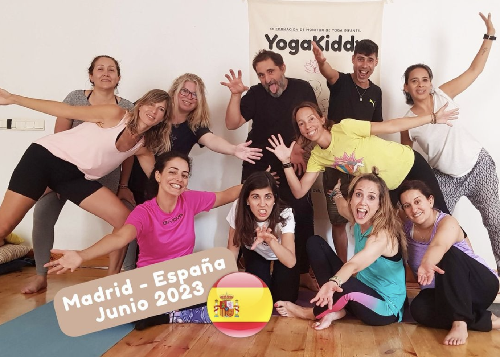
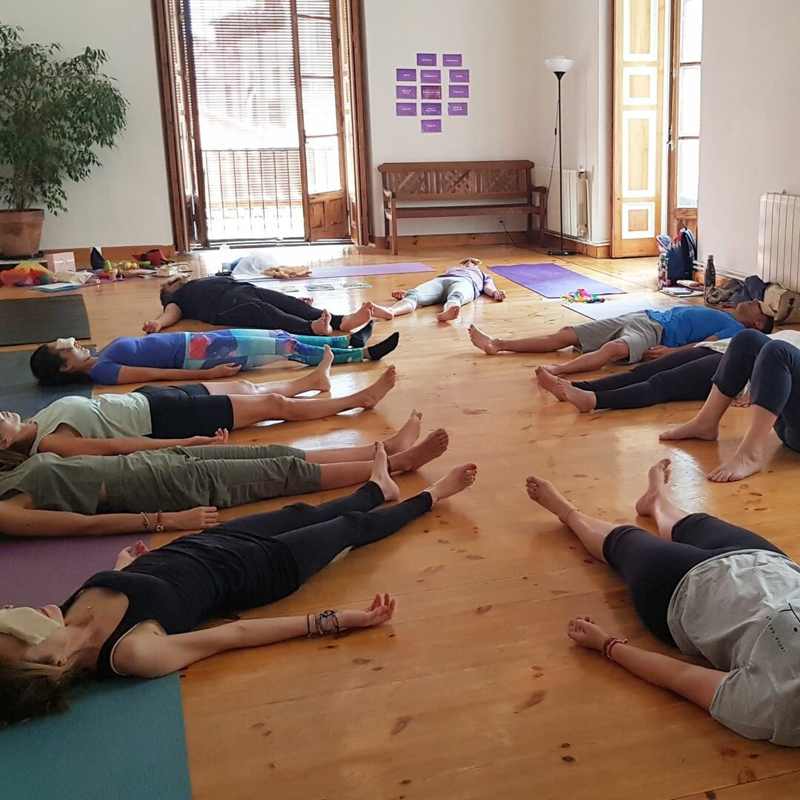
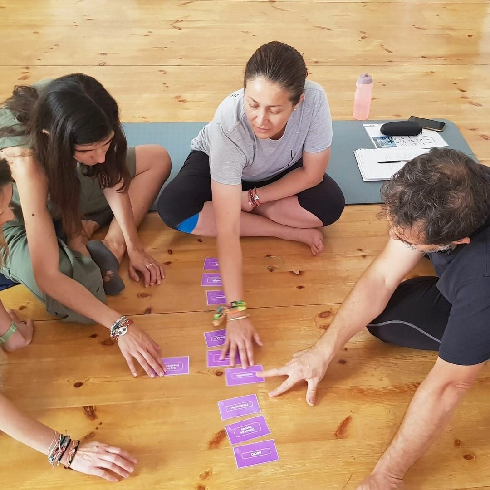
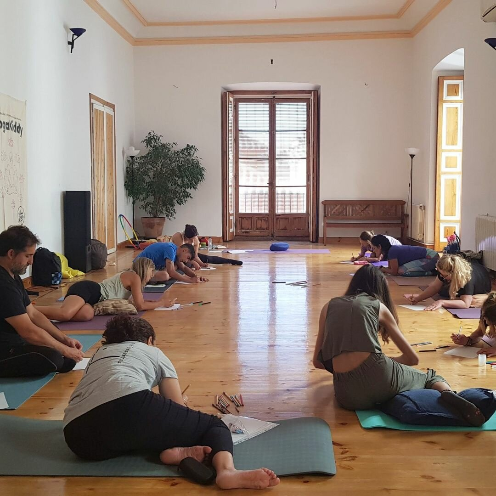
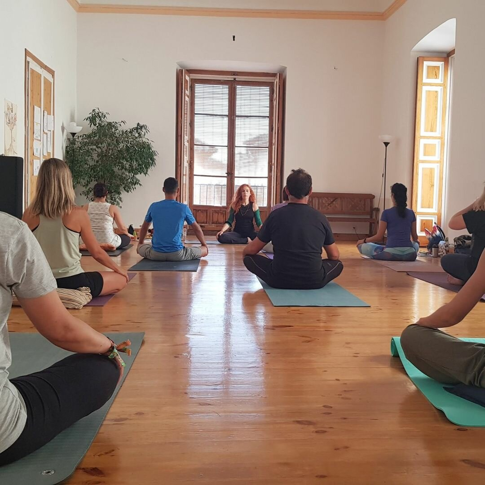

Un Fin de Semana Soleado en Madrid: Viendo el Cambio a través del Yoga
En un brillante fin de semana de junio, un grupo de devotos del yoga se reunió para una preparación extraordinaria. El objetivo era aprender a dirigir sesiones exitosas de yoga para niños utilizando una estrategia educativa-terapéutica. El ambiente estaba lleno de energía positiva y emoción mientras los participantes se preparaban para embarcarse en un viaje de conocimiento y crecimiento.





Rubén y Luis, dos expertos en su campo, irradiaban energía masculina mientras transmitían una auténtica esperanza de que podrían utilizar el yoga para cambiar el mundo. Cuando todos se reunieron, parecía como si hubiéramos creado algo más grande que nosotros mismos: una "tribu" que unía a personas diversas y entusiastas de crecer juntas a través de esta experiencia.
El primer día pasó volando, como si el tiempo se hubiera evaporado en el aire. Fueron 18 horas increíbles de experiencias que cambiaron la vida y que desafiaban la descripción. Todos los que participaron se sintieron profundamente agradecidos por tener la oportunidad de vivir una experiencia tan especial. A medida que avanzaban en el programa, comenzaron a comprender cómo diseñar y construir clases de yoga significativas que tuvieran repercusiones duraderas en la vida de los niños.
La formación nos enseñó los fundamentos del yoga para niños, brindándonos la capacidad de enseñar en una variedad de entornos, desde la escuela hasta el ámbito de la salud y el tiempo en familia. No importaba si las personas estaban comenzando su viaje o ya tenían experiencia, ¡todos encontraron algo valioso ese día!
Nos fuimos llenos de pasión y listos para nuestras nuevas aventuras como instructores de yoga para niños, y Carmen estaba especialmente emocionada por lo que nos esperaba. Sabía muy bien que, a través de su compromiso y entusiasmo, podía tener un impacto beneficioso en la vida de muchos niños.
Así que el grupo se despidió de Madrid con agradecimiento y confianza en sus corazones. No solo adquirieron nuevos conocimientos, sino que también tenían la certeza de que estaban listos para cambiar algo para mejor en el entorno del yoga para niños.
A partir de ese momento, la tribu de Madrid siguió viajando y compartiendo su pasión por el yoga infantil y sus enseñanzas con todas las personas dispuestas a unirse a ellos. Juntos, establecieron un futuro en el que esta antigua práctica se convertiría en un instrumento influyente que contribuiría al desarrollo y bienestar de los más pequeños.
Como resultado, bajo los rayos del sol que brillaban sobre ellos y con abundante optimismo en sus mentes, los miembros de la familia madrileña avanzaron en su viaje, conscientes de que estaban listos para dejar una marca duradera en el mundo habitado por yoguis infantiles.